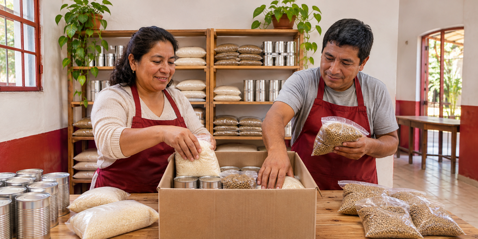

Alimentos
Una despensa compartida
Reunir arroz, lentejas y conservas para familias que necesitan apoyo con su alimentación.
Para: Familias de la comunidad.
Recolección: Mesa comunitaria del Norte.
Hasta: 28 de febrero de 2027.
Registrar un aporte